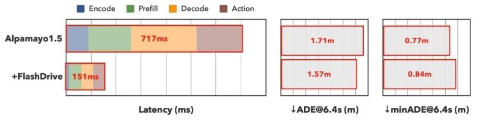
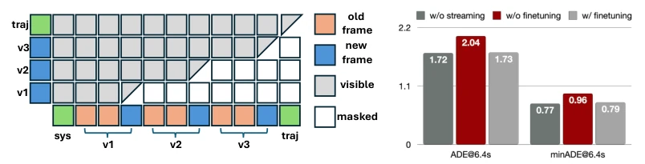
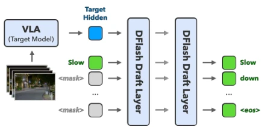
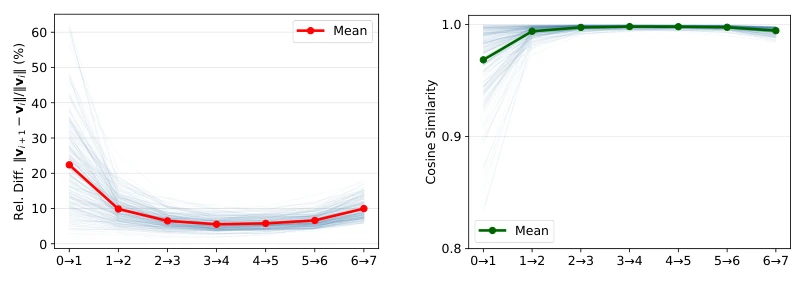

Vision-Language-Action (VLA) 模型虽然能实现从感知到控制的端到端推理，解决了模块化管道在长尾场景下的脆弱性问题 (Wang et al., 2025b; Zhou et al., 2025)，但其计算成本高昂，严重阻碍了实时部署。以 Alpamayo 1.5-10B 为例，在 RTX PRO 6000 上单帧推理耗时 717ms，控制频率仅 1.4Hz，远低于自动驾驶安全所需的实时性 (Wang et al., 2025b)。现有高效 VLA 推理工作多聚焦于单一阶段优化，如线性注意力 (Leal et al., 2024)、状态空间模型 (Liu et al., 2024) 或模型压缩 (Kim et al., 2024; Wang et al., 2025a)，或者仅针对单一效率轴进行改进。这种‘头痛医头’的方式无法解决 VLA 推理中结构性的级联瓶颈：视觉编码重复处理重叠帧、语言模型预填充重复计算上下文、推理 token 串行生成、以及流匹配去噪在均匀步长下浪费算力。单纯优化某一步骤无法带来显著的整体加速，亟需一种针对全链路冗余的协同设计框架。
—

Figure 1: Reasoning VLA models for autonomous driving, such as Alpamayo 1.5, exhibit prohibitive end-to-end inference latency: 717 ms on an RTX PRO 6000, far exceeding real-time requirements. FlashDrive achieves a 4.7× latency reduction (down to 151 ms) while incurring negligible degradation on minADE6@6.4s and even improving minADE1@6.4s.
Figure 2: Streaming inference encodes only the newest frame and reuses the KV cache from preceding frames, cutting the effective sequence length by 75%. To preserve view-major token ordering, incoming frames are inserted at the end of each camera view; to accommodate position shifts, keys are cached pre-RoPE and rotary embeddings applied on the fly.

Figure 3: (a) The streaming attention mask preserves causal attention across views while admitting only the newest frame’s tokens as queries. (b) Streaming fine-tuning of the action expert recovers nearly all of the trajectory accuracy lost to KV-cache approximation.

Figure 4: Speculative reasoning with DFlash. A dif- fusion drafter generates an entire candidate block in one forward pass, conditioned on the hidden states of the last eight target-model tokens. With only two draft layers, it achieves an average accepted length of 5.6 tokens.

Figure 5: Consecutive velocities in the flow-matching process are highly redundant through the middle of the denoising path but change sharply at the endpoints, so intermediate evaluations can be cached and skipped. We randomly sample 10 clips and 20 window inputs per clip to plot the relative difference (a) and cosine similarity (b) between consecutive steps.